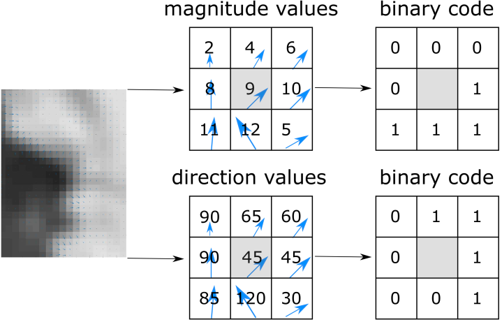

Viet-Tuan Le
tuanlv@sju.ac.kr
I am a researcher at Human-Computer Interaction (HCI) Laboratory, Sejong University, Korea.
News
[1/18/20232]
HSTforU
[5/25/2022]
ASTNet
is available online.
[4/21/2022] Code of
ASTNet
is released.
[4/09/2022]
ASTNet
(Attention-based Residual Autoencoder for Video Anomaly Detection) is accpeted by
Applied Intelligence.
Publications
HSTforU: Anomaly Detection in Aerial and Ground-based Videos with Hierarchical Spatio-Temporal Transformer for U-net
Viet-Tuan Le
,
Hulin Jin
,
Yong-Guk Kim
Journal [under review]
project page
video
code
bibtex
Attention-based Residual Autoencoder for Video Anomaly Detection
Viet-Tuan Le
,
Yong-Guk Kim
Applied Intelligence
project page
video
code
bibtex

Local binary pattern based on image gradient for bark image classification
Tuan Le-Viet
,
Vinh Truong Hoang
Tenth International Conference on Signal Processing Systems (ICSPS), 2019, Singapore
project page
code
bibtex
Human action recognition on simple and complex background in video
Tuan Le-Viet
,
Ngoc Ly Quoc
International Conference on Control, Automation and Information Sciences (ICCAIS), 2012, Vietnam
project page
video
code
bibtex
Review Services
Program Committee Member
International Conference on Intelligence of Things (ICIT), 2022